This is a simple LEMP stack example, where the frontend is served by Nginx, the backend is powered by PHP-FPM, and the database is MySQL. The application demonstrates basic CRUD operations and showcases how to containerize a web application using Docker and deploy it on Kubernetes(Rahti).
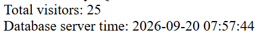
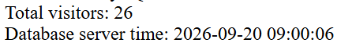
Take note of the second screenshot above that shows total visitors of 26
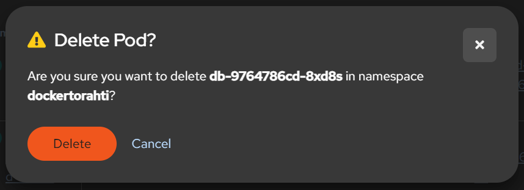
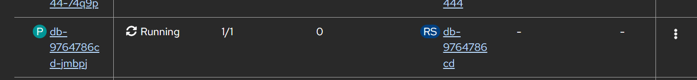
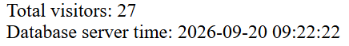
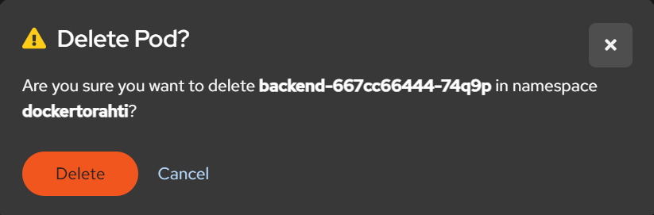
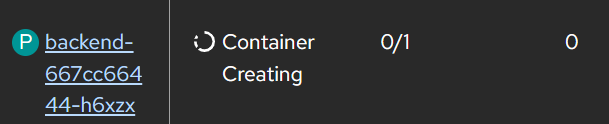
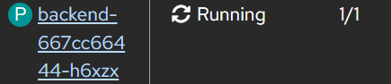
A new pod appears because Kubernetes operates under a declarative state management model. The deployment spec explicitly dictates replicas: 1. When a pod is deleted, the cluster notices the actual state (0 running pods) diverges from the desired state (1 running pod). The ReplicaSet (managed by the Deployment controller and the responsponsible rescource) detects this missing instance and automatically issues a system command to provision a matching replacement pod.
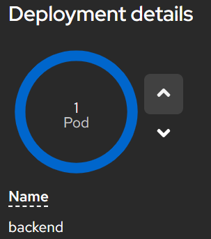
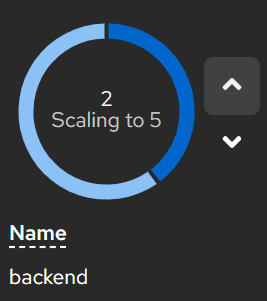
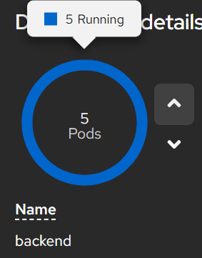
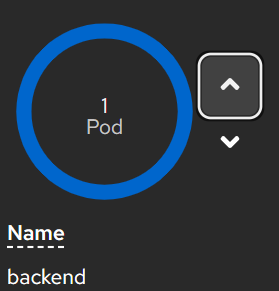
The frontend does not track individual backend Pod IP addresses. Instead, the frontend routes all internal API traffic to the virtual IP of the Kubernetes Service abstraction (http://backend:8000). The Service automatically balances incoming requests across all three healthy backend pods using a built-in round-robin mechanism.
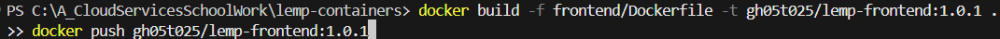
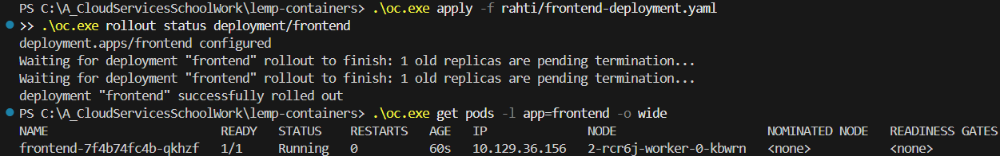
I was unable to catch the deployment on the Rahti console but, if you look closely at the screenshot above, you will see that the old pods were terminated. Followed instantly by a new one being built.
I had quite the experience getting these containers deployed. After preparing all of the YAML files and setting up a new project in Rahti, I applied the configurations to build the containers. Once everything was deployed, I went straight to my routes, clicked the public link, and encountered a 503 error. The frontend was not working. Long story short, Nginx needed to be set to unprivileged, and I discovered that Google Chrome was automatically forcing HTTP connections to HTTPS. Once I adjusted that browser security setting, I used AI to help clean up my manifest files and get all my ducks in a row.
Rahti is deployed through declarative manifests (YAML) and managed by a centralized API controller. Built-in internal Services handle routing and networking, while an automated Route resource dynamically generates public URLs with integrated SSL. Additionally, an active orchestration engine provides automated self-healing, replication, horizontal scaling, and rolling, zero-downtime updates.
Docker Compose + cPouta, on the other hand, relies on manual scripting via SSH, starting containers locally with a docker-compose.yml file. Networking and routing are managed through an internal Docker bridge network; exposing public ports requires host port mapping along with manual firewall and reverse proxy configuration. Furthermore, if a container crashes, it stays down unless configured with a strict Docker restart policy, and a host machine failure drops the entire environment. Ultimately, you must handle most management and recovery tasks yourself or build the automation from scratch.